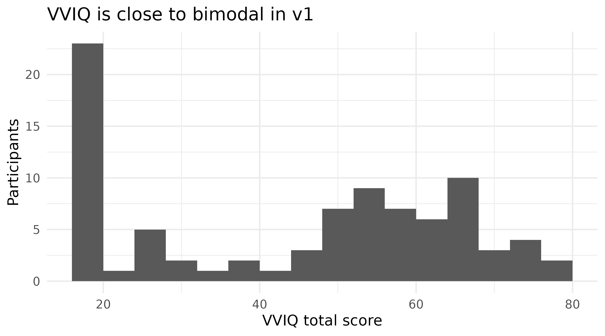

Psychometrics: how the questionnaires behave in this sample
Source:vignettes/articles/psychometrics.Rmd
psychometrics.RmdThree questionnaires accompany the WM-FTT: the VVIQ (Marks, 1973), the OSIVQ (Blazhenkova & Kozhevnikov, 2009) and the NIEQ (Heavey et al., 2019). All three feed downstream analyses, and two of them turned out to need caveats. This page reports how each behaves in this sample rather than citing the reliabilities from their manuals, because one of them does not reproduce.
The task’s own reliabilities are on the task validity page, where the split-half machinery lives. Everything below is computed when this page is built.
This page stays on v1, where the beyond vividness page pools all three versions. The two are asking different questions. Pooling is right when the aim is to describe the instruments in as many people as possible; here the aim is to say whether the scales are trustworthy in the sample the modelling pages use, and that sample is v1. Where a claim below rests on the other versions, it says so.
participants <- get_data("v1") |> dplyr::distinct(id, .keep_all = TRUE)
# Cronbach's alpha from raw items. Written out rather than pulled from a
# package so the formula is visible: k/(k-1) * (1 - sum(item variances) /
# variance of the total).
cronbach_alpha <- function(items) {
items <- items[stats::complete.cases(items), , drop = FALSE]
n_items <- ncol(items)
n_items / (n_items - 1) *
(1 - sum(apply(items, 2, stats::var)) / stats::var(rowSums(items)))
}
# Corrected item-total correlation: each item against the sum of the others.
item_total <- function(items) {
items <- items[stats::complete.cases(items), , drop = FALSE]
total <- rowSums(items)
purrr::map_dbl(names(items), \(item) stats::cor(items[[item]], total - items[[item]]))
}1. VVIQ
Sixteen items, no reverse-keyed items, single dimension.
vviq_items <- purrr::list_rbind(participants$vviq_items)
tibble::tibble(
instrument = "VVIQ",
items = ncol(vviq_items),
alpha = cronbach_alpha(vviq_items),
min_item_total = min(item_total(vviq_items)),
negative_item_totals = sum(item_total(vviq_items) < 0)
) |>
knitr::kable(digits = 3, caption = "VVIQ internal consistency, v1")| instrument | items | alpha | min_item_total | negative_item_totals |
|---|---|---|---|---|
| VVIQ | 16 | 0.978 | 0.774 | 0 |
Nothing to report, which is the useful result: alpha is high, every item correlates positively with the rest, and the weakest item still exceeds 0.75. The VVIQ is doing its job here.
The distribution is another matter, and matters more for modelling than the reliability does:
participants |>
dplyr::filter(!is.na(vviq_total_score)) |>
ggplot(aes(vviq_total_score)) +
geom_histogram(binwidth = 4, boundary = 16) +
labs(x = "VVIQ total score", y = "Participants",
title = "VVIQ is close to bimodal in v1")
participants |>
dplyr::filter(!is.na(vviq_total_score)) |>
dplyr::count(band = cut(vviq_total_score, c(15, 16, 25, 40, 60, 80),
include.lowest = TRUE)) |>
knitr::kable(caption = "VVIQ distribution: a floor spike and a sparse middle")| band | n |
|---|---|
| [15,16] | 20 |
| (16,25] | 7 |
| (25,40] | 7 |
| (40,60] | 27 |
| (60,80] | 25 |
Roughly a quarter of the sample sits at exactly 16, the scale minimum, and the middle of the range is nearly empty. That is why VVIQ is not treated as a plain continuous predictor everywhere downstream; the analysis strategy page §3 sets out the floor-group form every model uses and the caution that comes with it.
2. OSIVQ, and a scoring inconsistency worth knowing about
Three subscales: object, spatial, verbal. Four items are
reverse-keyed, and they are stored inconsistently across task
versions. v1 and v2 store osivq_q02v,
osivq_q09v, osivq_q41v and
osivq_q42s unreversed; v3 stores them already reversed. The
object_mean, spatial_mean and
verbal_mean columns are correct in both cases. Only the raw
items in osivq_items differ.
That claim spans versions while the rest of this page is v1, so it is checked directly rather than asserted: if v3 really does store them reversed, its item-total correlations for those items should be positive where v1’s are negative.
reverse_keyed <- c("osivq_q02v", "osivq_q09v", "osivq_q41v", "osivq_q42s")
item_total_by_version <- function(v) {
people <- get_data(v) |> dplyr::distinct(id, .keep_all = TRUE)
items <- purrr::list_rbind(people$osivq_items)
suffix <- sub("^.*q[0-9]+", "", reverse_keyed)
purrr::map2_dbl(reverse_keyed, suffix, function(item, s) {
block <- items[, grepl(paste0(s, "$"), names(items)), drop = FALSE]
block <- block[stats::complete.cases(block), , drop = FALSE]
stats::cor(block[[item]], rowSums(block) - block[[item]])
})
}
tibble::tibble(item = reverse_keyed) |>
dplyr::mutate(
v1 = item_total_by_version("v1"),
v3 = item_total_by_version("v3")
) |>
knitr::kable(digits = 2,
caption = "Corrected item-total correlations for the four reverse-keyed items")| item | v1 | v3 |
|---|---|---|
| osivq_q02v | -0.27 | 0.51 |
| osivq_q09v | -0.29 | 0.58 |
| osivq_q41v | -0.32 | 0.56 |
| osivq_q42s | -0.50 | 0.46 |
Negative in v1, positive in v3. The items are the same; only the storage convention differs.
The consequence within v1 is silent, so it is worth showing too:
osivq_raw <- purrr::list_rbind(participants$osivq_items)
osivq_fixed <- osivq_raw
for (item in reverse_keyed) osivq_fixed[[item]] <- 6 - osivq_fixed[[item]]
subscale_items <- function(items, suffix) {
items[, grepl(paste0(suffix, "$"), names(items)), drop = FALSE]
}
tibble::tibble(
subscale = c("object", "spatial", "verbal"),
suffix = c("o", "s", "v")
) |>
dplyr::mutate(
items = purrr::map_int(suffix, \(s) ncol(subscale_items(osivq_raw, s))),
alpha_as_stored = purrr::map_dbl(suffix, \(s) cronbach_alpha(subscale_items(osivq_raw, s))),
alpha_corrected = purrr::map_dbl(suffix, \(s) cronbach_alpha(subscale_items(osivq_fixed, s)))
) |>
dplyr::select(-suffix) |>
knitr::kable(digits = 3,
caption = "OSIVQ alpha in v1, before and after reversing the reverse-keyed items")| subscale | items | alpha_as_stored | alpha_corrected |
|---|---|---|---|
| object | 14 | 0.951 | 0.951 |
| spatial | 11 | 0.758 | 0.861 |
| verbal | 9 | 0.249 | 0.842 |
Computed naively from the stored items, the verbal subscale looks broken. Corrected, all three are healthy. The three items driving it are visible in their item-total correlations:
verbal_raw <- subscale_items(osivq_raw, "v")
tibble::tibble(item = names(verbal_raw),
item_total_as_stored = item_total(verbal_raw)) |>
dplyr::arrange(item_total_as_stored) |>
knitr::kable(digits = 2,
caption = "OSIVQ verbal items: negative correlations mark the unreversed ones")| item | item_total_as_stored |
|---|---|
| osivq_q41v | -0.32 |
| osivq_q09v | -0.29 |
| osivq_q02v | -0.27 |
| osivq_q08v | 0.26 |
| osivq_q35v | 0.26 |
| osivq_q04v | 0.26 |
| osivq_q37v | 0.37 |
| osivq_q16v | 0.45 |
| osivq_q39v | 0.47 |
Anyone recomputing OSIVQ scores from the item columns needs to reverse those four for v1 and v2, and not for v3. The subscale mean columns already handle it.
3. NIEQ
Ten items: five dimensions, each measured by a “frequently” item and a “generally” item, scored as the pair’s mean.
A total across all ten items is meaningless, since the dimensions are not facets of one construct. Someone with frequent inner speech need not have frequent imagery. So Cronbach’s alpha over the full instrument is not the right statistic, and computing it would produce a number that looks like a defect but is not one. The right check is whether each pair agrees.
nieq_items <- purrr::list_rbind(participants$nieq_items)
# Two-item reliability is the Spearman-Brown correction of the pair's
# correlation, not alpha. Written out for the same reason as
# `cronbach_alpha()` above: this page's job is to show the arithmetic, so
# both formulas are visible rather than called from the package. The
# exported `spearman_brown()` is identical and is what the scripts use.
spearman_brown <- function(r) 2 * r / (1 + r)
nieq_pairs <- tibble::tibble(
dimension = c("Mental imagery", "Inner voice", "Emotions",
"Sensory focus", "Unsymbolised thinking"),
stem = c("mental_imagery", "inner_voice", "emotions",
"sensory_focus", "unsymbolised")
) |>
dplyr::mutate(
pair_r = purrr::map_dbl(stem, \(s) stats::cor(
nieq_items[[paste0("nieq_freq_", s)]],
nieq_items[[paste0("nieq_prop_", s)]],
use = "complete.obs")),
reliability = spearman_brown(pair_r)
) |>
dplyr::select(-stem)
knitr::kable(nieq_pairs, digits = 3,
caption = "NIEQ two-item subscale reliability, v1")| dimension | pair_r | reliability |
|---|---|---|
| Mental imagery | 0.838 | 0.912 |
| Inner voice | 0.763 | 0.865 |
| Emotions | 0.665 | 0.799 |
| Sensory focus | 0.326 | 0.492 |
| Unsymbolised thinking | 0.575 | 0.730 |
Four of the five dimensions are adequate. Sensory focus is not, at 0.49, well below the conventional 0.70 floor: its two items barely agree, so the subscale mean is not measuring one thing. That is consistent with sensory awareness being the weakest dimension in the instrument’s own validation, and it means sensory focus should not carry the same weight as the others wherever NIEQ subscales are used as inputs.
Unsymbolised thinking, at 0.73, is adequate. That matters more than it might appear: it is the dimension with the clearest theoretical stake in this project, and a two-item subscale is exactly the kind of measure that can quietly fail to support the weight placed on it.
4. Summary
dplyr::bind_rows(
tibble::tibble(instrument = "VVIQ", scale = "total",
reliability = cronbach_alpha(vviq_items), method = "alpha, 16 items"),
tibble::tibble(
instrument = "OSIVQ",
scale = c("object", "spatial", "verbal"),
reliability = purrr::map_dbl(c("o", "s", "v"),
\(s) cronbach_alpha(subscale_items(osivq_fixed, s))),
method = "alpha, reverse-keyed items corrected"),
nieq_pairs |>
dplyr::transmute(instrument = "NIEQ", scale = dimension,
reliability, method = "Spearman-Brown, 2 items")
) |>
dplyr::mutate(adequate = dplyr::if_else(reliability >= 0.70, "yes", "NO")) |>
knitr::kable(digits = 3, caption = "All questionnaire scales, v1")| instrument | scale | reliability | method | adequate |
|---|---|---|---|---|
| VVIQ | total | 0.978 | alpha, 16 items | yes |
| OSIVQ | object | 0.951 | alpha, reverse-keyed items corrected | yes |
| OSIVQ | spatial | 0.861 | alpha, reverse-keyed items corrected | yes |
| OSIVQ | verbal | 0.842 | alpha, reverse-keyed items corrected | yes |
| NIEQ | Mental imagery | 0.912 | Spearman-Brown, 2 items | yes |
| NIEQ | Inner voice | 0.865 | Spearman-Brown, 2 items | yes |
| NIEQ | Emotions | 0.799 | Spearman-Brown, 2 items | yes |
| NIEQ | Sensory focus | 0.492 | Spearman-Brown, 2 items | NO |
| NIEQ | Unsymbolised thinking | 0.730 | Spearman-Brown, 2 items | yes |
One scale of nine falls below the threshold. The OSIVQ reverse-coding inconsistency does not affect any stored score, but does affect anyone recomputing from items. Neither problem is visible without checking, which is the argument for this page existing.
References
Continuing through the Extended Online Report: this page follows task validity. To keep reading in order, continue to the analysis next. Or skip ahead to the analysis, which explains what the modelling pages do and why.
#> ─ Session info ───────────────────────────────────────────────────────────────
#> setting value
#> version R version 4.6.1 (2026-06-24)
#> os Ubuntu 24.04.4 LTS
#> system x86_64, linux-gnu
#> ui X11
#> language en
#> collate C.UTF-8
#> ctype C.UTF-8
#> tz UTC
#> date 2026-08-26
#> pandoc 3.8.3 @ /opt/hostedtoolcache/pandoc/3.8.3/x64/ (via rmarkdown)
#> quarto NA
#>
#> ─ Packages ───────────────────────────────────────────────────────────────────
#> package * version date (UTC) lib source
#> aphantasiaWMStrats * 0.1 2026-08-26 [1] local
#> bslib 0.12.0 2026-08-04 [2] CRAN (R 4.6.1)
#> cachem 1.1.0 2024-05-16 [2] CRAN (R 4.6.1)
#> cli 3.6.6 2026-04-09 [2] CRAN (R 4.6.1)
#> crayon 1.5.3 2024-06-20 [2] CRAN (R 4.6.1)
#> desc 1.4.3 2023-12-10 [2] CRAN (R 4.6.1)
#> digest 0.6.39 2025-11-19 [2] CRAN (R 4.6.1)
#> dplyr 1.2.1 2026-04-03 [2] CRAN (R 4.6.1)
#> evaluate 1.0.5 2025-08-27 [2] CRAN (R 4.6.1)
#> farver 2.1.2 2024-05-13 [2] CRAN (R 4.6.1)
#> fastmap 1.2.0 2024-05-15 [2] CRAN (R 4.6.1)
#> fs 2.1.0 2026-04-18 [2] CRAN (R 4.6.1)
#> generics 0.1.4 2025-05-09 [2] CRAN (R 4.6.1)
#> ggplot2 * 4.0.3 2026-04-22 [2] CRAN (R 4.6.1)
#> glue 1.8.1 2026-04-17 [2] CRAN (R 4.6.1)
#> gtable 0.3.6 2024-10-25 [2] CRAN (R 4.6.1)
#> htmltools 0.5.9 2025-12-04 [2] CRAN (R 4.6.1)
#> jquerylib 0.1.4 2021-04-26 [2] CRAN (R 4.6.1)
#> jsonlite 2.0.0 2025-03-27 [2] CRAN (R 4.6.1)
#> knitr 1.51 2025-12-20 [2] CRAN (R 4.6.1)
#> labeling 0.4.3 2023-08-29 [2] CRAN (R 4.6.1)
#> lifecycle 1.0.5 2026-01-08 [2] CRAN (R 4.6.1)
#> magrittr 2.0.5 2026-04-04 [2] CRAN (R 4.6.1)
#> otel 0.2.0 2025-08-29 [2] CRAN (R 4.6.1)
#> pillar 1.11.1 2025-09-17 [2] CRAN (R 4.6.1)
#> pkgconfig 2.0.3 2019-09-22 [2] CRAN (R 4.6.1)
#> pkgdown 2.2.1 2026-07-07 [2] any (@2.2.1)
#> purrr 1.2.2 2026-04-10 [2] CRAN (R 4.6.1)
#> R6 2.6.1 2025-02-15 [2] CRAN (R 4.6.1)
#> ragg 1.5.2 2026-03-23 [2] CRAN (R 4.6.1)
#> RColorBrewer 1.1-3 2022-04-03 [2] CRAN (R 4.6.1)
#> renv 1.0.7 2024-04-11 [2] RSPM (R 4.6.1)
#> rlang 1.3.0 2026-07-05 [2] CRAN (R 4.6.1)
#> rmarkdown 2.31 2026-03-26 [2] CRAN (R 4.6.1)
#> S7 0.2.2 2026-04-22 [2] CRAN (R 4.6.1)
#> sass 0.4.10 2025-04-11 [2] CRAN (R 4.6.1)
#> scales 1.4.0 2025-04-24 [2] CRAN (R 4.6.1)
#> sessioninfo 1.2.4 2026-06-04 [2] CRAN (R 4.6.1)
#> systemfonts 1.3.2 2026-03-05 [2] CRAN (R 4.6.1)
#> textshaping 1.0.5 2026-03-06 [2] CRAN (R 4.6.1)
#> tibble 3.3.1 2026-01-11 [2] CRAN (R 4.6.1)
#> tidyselect 1.2.1 2024-03-11 [2] CRAN (R 4.6.1)
#> vctrs 0.7.3 2026-04-11 [2] CRAN (R 4.6.1)
#> withr 3.0.3 2026-06-19 [2] CRAN (R 4.6.1)
#> xfun 0.60 2026-07-09 [2] CRAN (R 4.6.1)
#> yaml 2.3.12 2025-12-10 [2] CRAN (R 4.6.1)
#>
#> [1] /tmp/Rtmph67Pun/temp_libpath87a93012435a
#> [2] /home/runner/.cache/R/renv/library/aphantasiaWMStrats-f7ce8556/linux-ubuntu-noble/R-4.6/x86_64-pc-linux-gnu
#> [3] /home/runner/.cache/R/renv/sandbox/linux-ubuntu-noble/R-4.6/x86_64-pc-linux-gnu/e7c0fad7
#> * ── Packages attached to the search path.
#>
#> ──────────────────────────────────────────────────────────────────────────────